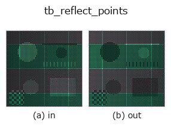

typed op• Data kinds: points → points
• Call: fullseye.apply(img, "tb_reflect_points", a=0.5, b=0.5) (the 2-D model is one image plus two scalar knobs a,b∈[0,1])

*The figure is the actual output on a synthetic 128×128 input. Left: input, right: output. Point clouds are drawn as a top-down scatter (brightness = z), 1-D series as a line plot, volumes as the maximum-intensity projection along z, videos as the middle frame, complex images as magnitude; return values that are not pictures are shown as the values themselves.*
*Knob a does not change the output (measured: identical at 0.1 / 0.5 / 0.9).*
*Knob b does not change the output (measured: identical at 0.1 / 0.5 / 0.9).*
Stages (the ops that come before → this op, left to right):
▸ tb_reflect_points: stages (docs site)
On other images (synthetic scene / photo / coins. Top row: inputs, bottom row: their outputs. Knobs at default):
▸ tb_reflect_points: other inputs (docs site)
Mirror a point cloud across a plane (point plane_point, normal plane_normal). -> (N,3).
For each point p, the signed distance from the plane d = (p - plane_point) · n (n is the normalised normal) is taken, and p' = p - 2 d n is returned (Householder reflection). Points on the plane do not move, and points on the two sides of the plane swap. The order of the points is kept, so p'[i] is the mirror image of p[i]. The coordinate units are unchanged.
• points: (N,3) array (converted to float). The shape is not validated.
• plane_point: 1 point on the plane (3,). plane_normal: normal (3,) (any length, normalised internally; its sign does not affect the result).
Caution: the normal is divided by its norm plus 1e-12, so passing a zero vector raises no exception and the point cloud comes back almost unchanged (this is not fail-closed). Besides being used inside reflection_symmetry_score / detect_reflection_symmetry, it can also be used for shape completion that fills the missing side with a detected symmetry plane (concatenating the mirror image to the original point cloud).
The 3d op reflect_points bridged into the 2-D evolution registry. The implementation is the same; only the calling convention is adapted to op(v, a, b). This op has no tunable parameters; neither a nor b is used.
• Sample-data catalog (download URLs / licences) — 2-D uses skimage.data (BSD/public domain) plus synthetic images; 3-D lists download URLs for real data sources (Stanford, PDS, …).
• Operator provenance and references — the sources of the research/methods this op family came from.
The program below has been verified to run (same input as the figure). In Studio's help this block becomes buttons that load and run it on the spot.
img_to_points 0.50 0.50 tb_reflect_points 0.50 0.50
▸ Load this pipeline · Load & run
The examples below call the underlying ledger op reflect_points. This bridge op is the same implementation adapted to the fn(v, a, b) convention, so the behaviour carries over unchanged (only the call form differs).
• reflection_symmetry — py -3.11 examples_3d/reflection_symmetry.py
points as input)identity · tb_points_to_voxel · tb_estimate_point_normals · tb_iss_keypoints · tb_project_points · tb_render_point_depth · tb_statistical_outlier_removal · tb_radius_outlier_removal
typed)tb_points_to_voxel · tb_estimate_point_normals · tb_iss_keypoints · tb_project_points · tb_render_point_depth · tb_statistical_outlier_removal · tb_radius_outlier_removal · tb_voxel_grid_downsample
*Provenance: ops.py — 2D operator registry. This per-op note is generated by tools/opdocs.py md (do not hand-edit).*
© 2026 Kazufumi Furuse — Fullseye operator documentation. Licensed under Apache-2.0.